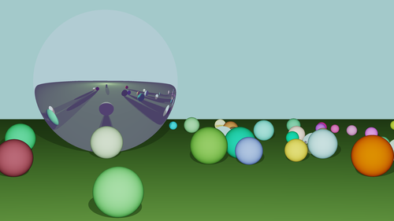

Raytracer

I made a raytracer! yayyy :)
The image above was rendered using my raytracer.
I had SO much fun making this project. OMG, I thought it was super cool seeing these spheres be rendered. And when I added reflection, I lost my mind. (My raytracer also supports refraction but it looks less cool, imo).
A raytracer is a program that renders a scene using the method called raytracing. Raytracing is when you shoot rays from each pixel on the screen into the scenea and determine where the ray hits an object in the screen. Then, the color of that pixel where the ray originated gets set to the color of object that it hit. That's the basic idea, but then you can make the pixel color depend on the angle that the ray makes with the intersection point to make your objects look 3D. Also, you can bounce the ray multiple times to simulate reflection. Also, you can check if the intersection point is lit by a light source to simulate shadows. And there's so many more features that you can add to a raytracer to make the rendered images look amazing.
I read these helpful articles at Scratchapixel that taught me not only about raytracing but other concepts from computer graphics that help you understand what's going on in raytracing.
Check out my code here . The github readme explains how to build and run the raytracer for yourself. I made a frontend that generates a scene filled with randomly placed spheres so that you can test the raytracer on various scenes. Check out the readme and try it yourself!